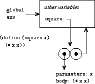
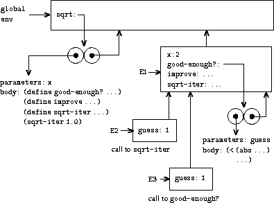
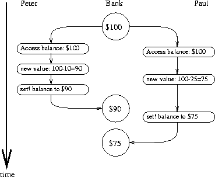

Structure and Interpretation of Computer Programs - Modularity, Objects, and State
第三章 - Modularity, Objects, and State
前两章说明了如果采取抽象，降低编程复杂性。
本章用来说明，如果对程序和系统进行模块化编程，从而可以将整个系统分为若干块，即可以降低编程复杂性，同时可以多人合作。降低模块间耦合，提高内聚。
一个很强大的策略，特别适合构建对真实世界的模拟，即根据被模拟的系统的结构进行设计程序的结构。其中有两种编程模式：基于对象(object-based)和基于流处理(stream-processing)。
基于对象的编程模式，即将真实世界看作是很多对象，他们行为根据输入的消息和内部的状态而不断变化。
基于刘处理的编程模式，类似电子系统中的信号处理系统，数据流过系统。
为了实现上述的两种编程模式，就需要对象可以保存内部状态，这样需要引入 环境模型 。
如果更为重要的引入时间概念和并发计算，流处理将更为适用。
赋值和局部状态 - Assignment and Local State
编程为了解决实际的问题，如果我们将物理世界看作是一堆计算对象，那么计算对象需要具有内部状态，计算行为会根据内部状态和外部输入信号决定。例如银行账户，需要记录账户的存款，从而决定在取款的时候决定能够实现。
该种编程模式，需要对系统进行划分，划分成若干不相关的对象，即可实现模块化。每个对象只关注内部的状态，从而决定计算行为。这样内部的状态的改变，需要引入赋值来实现。
局部状态变量
scheme 提供 set! 来进行变量的赋值，例如银行账户系统：
1: (define balance 100) 2: 3: (define (withdraw amount) 4: (if (>= balance amount) 5: (begin (set! balance (- balance amount)) 6: balance) 7: "Insufficient funds"))
其中 set! 用来取款后，对账户余额进行设置。
引入赋值的好处
在实现一个随机函数 rand 时候，如果没有引入内部状态，而是采取函数式编程方式实现。每次我们取下一个随机值，需要提供上一次随机值作为输入参数：
\(x_{2} = (rand-update\ x_{1})\)
\(x_{3} = (rand-update\ x_{2})\)
如果我们引入局部状态，并且引入赋值操作，那么 rand 可以实现的更为简洁：
1: (define rand 2: (let ((x rand-init)) 3: (lambda () 4: (set! x (rand-update x)) 5: x)))
上述定义，使得每次调用无需人为的记录上次的随机结果。
在实现一个经典算法蒙特卡洛模拟(Monte Carlo simulation)时，可以看出这种实现的好处。
蒙特卡洛模拟是通过对现实情况进行实验模拟，通过结果的分布来计算客观存在的数值。例如，\(6/\pi^{2}\) 是随机抽取两个整数之间没有公共因子的概率。我们可以通过模拟，然后近似计算处 π 的值。
1: (define (estimate-pi trials) 2: (sqrt (/ 6 (monte-carlo trials cesaro-test)))) 3: 4: (define (cesaro-test) 5: (= (gcd (rand) (rand)) 1)) 6: 7: (define (monte-carlo trials experiment) 8: (define (iter trials-remaining trials-passed) 9: (cond ((= trials-remaining 0) 10: (/ trials-passed trials)) 11: ((experiment) 12: (iter (- trials-remaining 1) (+ trials-passed 1))) 13: (else (iter (- trials-remaining 1) trials-passed)))) 14: (iter trials 0))
利用 rand-update 来获取随机数的计算过程如下：
1: (define (estimate-pi trials) 2: (sqrt (/ 6 (random-gcd-test trials random-init)))) 3: (define (random-gcd-test trials initial-x) 4: (define (iter trials-remaining trials-passed x) 5: (let ((x1 (rand-update x))) 6: (let ((x2 (rand-update x1))) 7: (cond ((= trials-remaining 0) 8: (/ trials-passed trials)) 9: ((= (gcd x1 x2) 1) 10: (iter (- trials-remaining 1) 11: (+ trials-passed 1) 12: x2)) 13: (else 14: (iter (- trials-remaining 1) 15: trials-passed 16: x2)))))) 17: (iter trials 0 initial-x))
该种实现从代码复杂度上，其实没有带来很多困扰。但是需要额外的记录随机结果x，这样从外围代码逻辑上破坏了程序的通用性。当需要编写另外一个实验的时候，可能需要一个或者三个随机函数的时候，代码需要改写。
即是说我们通过引入局部变量和赋值操作，可以将一些代码或者逻辑封装到一个计算对象中，从而实现编程的模块化。
引入赋值的坏处
一旦引入局部变量和赋值，就意味着替换模型不再能够适用。
- 同一和变化
引入赋值后，不简单的意味着一个特定的计算模型不再适用，同时带来了更多深远的变化。例如，两个对象如何被定义为同一？
由于每个对象具有内部状态，那么是否具有相同计算结果的对象就是同一的？例如，我们拥有两个银行账户，如果他们的余额是相同的，那么是否能说同一？显然不是的！
在引入赋值后，认为只有改变一个对象的状态后，另一个对象也发生了相同的变化，我们才说这两个对象是同一的。但是如果我们不能确定是否是同一，那么又如何分辨变化呢？
- 命令式程序设计的缺陷
与函数式程序设计相对应的，采取赋值的程序设计成为命令式程序设计(
imperative programming)。命令式程序设计不光是需要更为复杂的计算模型，而且会引入函数式程序设计中不会出现的错误。
例如考虑如下递归计算阶乘的程序：
1: (define (factorial n) 2: (define (iter product counter) 3: (if (> counter n) 4: product 5: (iter (* counter product) 6: (+ counter 1)))) 7: (iter 1 1))
相对于函数式编程，我们可以采取命令式编程：
1: (define (factorial n) 2: (let ((product 1) 3: (counter 1)) 4: (define (iter) 5: (if (> counter n) 6: product 7: (begin (set! product (* counter product)) 8: (set! counter (+ counter 1)) 9: (iter)))) 10: (iter)))
但是上述程序会引入一个陷阱，如何确定赋值的顺序？一旦引入赋值，就要考虑赋值的顺序问题，否则会出现意想不到的错误。这类问题，也常常在c语言中出现。
求值的环境模型 - The Environment Model of Evaluation
在引入赋值后，就不能将变量名认为对应的值，直接替换后进行求值了。变量由于会进行赋值运算，所以变量名将会被视作一个内存块的名字，相应的值存储在该内存块中。新的求值模型中，保存这些位置的信息结构叫做环境(environment)。
环境由一些列的桢(frame)组成，每个桢(frame)都是一个用来存储键值对的表，用来关联变量名和变量值(每个单独的桢内一个变量最多只有一个关联的值)。，除了全局桢外，每个桢都有一个指针，指向外包的环境桢。每次查询一个变量的值时，就是顺着指针查找到的第一个关联值。
求值的规则
在求值的环境模型中，一个过程都是由该过程的代码和外围的环境所组成。过程的定义，只能由 lambda 来进行，这样代码就是 lambda 中的代码段，环境是当前调用 lambda 的环境桢。
1: (define (square x) 2: (* x x)) 3: 4: => 5: 6: (define square 7: (lambda (x) (* x x)))
square 被定义过一个过程，其中直接定义的方式其实是使用 lambda 定义的一个语法糖衣。

显示了上述代码运行的结果，在全局的环境中定义了一个变量对象 square , 该对象关联到一个 lambda 语法运行结果。该 lambda 的运行结果由代码段 (* xx ) 和外围环境指针组成。
在调用一个过程的时候，首先创建一个新的环境桢，将参数添加到该环境桢中；外包环境就是定义该过程的环境。

上图显示了，调用 (square 5) 的过程。其中 E1 是调用是新创建的环境桢，外围的环境指针指向定义该过程的全局环境，在 E1 中 x 被设置为参数5，然后调用 square 代码部分 (* x x) 等于25。
环境模型中，函数应用的规则可以总结如下：
- 函数调用，首先根据形式参数构建新的环境桢，然后外围环境指针指向定义该过程的环境，然后对函数代码进行求值。
- 运行
lambda命令就是创建一个函数，该运行结果是一个序对，该序对由函数体和外包环境组成，外包环境就是运行该lambda的环境。
简单过程的应用
举例具化上述求值过程，例如如下代码段：
1: (define (square x) 2: (* x x)) 3: 4: (define (sum-of-squares x y) 5: (+ (square x) (square y))) 6: 7: (define (f a) 8: (sum-of-squares (+ a 1) (* a 2)))
下图显示了，创建的上述3个函数定义。 f，square和sum-of-squares 由各自的代码段和指向全局环境的外包环境指针组成。

下图显示调用 (f 5) 时创建的所有的局部环境； E1 局部环境是运行 (f 5) 时构建的，将形式参数设置为5，并且外包环境指针指向函数 f 创建时指向的外包环境，即全局环境； E2 为在 E1 环境中执行函数 f 代码段 (sum-of-squares (+ a 1) (+ a2)) 时构建的局部环境桢，并且设置形式参数为 x:6 y:10 ，外包环境指针指向定义函数 sum-of-squares 时指向的外包环境，即全局环境；同理如下。

运行上述的组合表达式的过程为：
- 首先我们调用(f 5)
- 创建局部环境
E1，然后在该局部环境中运行f的代码(sum-of-squares (+ a 1) (* a 2))。其中在E1局部环境桢中并没有函数sum-of-squares的定义，这时需要根据外包环境指针(全局环境桢中可以查找到)向上一个环境桢查找，然后剩下形式参数的基础表达式可以分别运算得到6和10。
- 调用(sum-of-squares 6 10)
- 创建局部环境
E2，然后运行代码(+ (squares x) (squares y))，其中x设置为6，y设置为10。这时运行形式参数的子表达式(square x)和(square y)，同样在上一个环境桢中查找到函数square的定义，然后分别创建E3和E4对子表达式进行求值。
- 调用(square 6)
- 创建局部环境
E3并且设置形式参数x等于6，调用square的代码，基础表达式运算得到36，返回结果。
- 调用(square 10)
- 创建局部环境
E4并且设置形式参数x等于10，调用square的代码，基础表达式得到100，返回结果。
- 返回结果
E2环境中获取子表达式返回结果36和100，就可以运算基础表达式(+ 36 100)获得结果136。E1获取结果136，并且返回。
从上述过程中，我们可以看到函数调用过程中，通过创建新的局部环境桢，就可以使得每次函数调用中具有相同命名的形式参数具有不同的实例。
环境桢作为局部变量存储的仓库
在了解的环境求值模型后，可以考虑一下如下创建银行账户余额的代码，是如何实现余额保存修改和保存的。
1: (define (make-withdraw balance) 2: (lambda (amount) 3: (if (>= balance amount) 4: (begin (set! balance (- balance amount)) 5: balance) 6: "Insufficient funds")))

上图显示了，函数定义的结果。和上一小节的函数定义结构体差不多，唯一的区别是函数的返回是一个 lambda 对象。
那么考虑下如下表达式的求值:
1: (define W1 (make-withdraw 100))
首先，会创建一个局部环境 E1 ，该局部环境中会设置形式参数balance为100。然后运行该代码部分 lambda 表达式。 lambda 返回的函数对象，代码段为 lambda 代码体确定，外围环境指针指向 E1 。最后结果显示如下：

现在考虑运行如下表达式:
1: (W1 50) => 50
根据W1的结果为函数对象，那么创建新的环境桢，其中设置形式参数amount为50，外包环境指针指向W1该函数对象的外包环境 E1 。然后运行该 lambda 代码：
1: (if (>= balance amount) 2: (begin (set! balance (- balance amount)) 3: balance) 4: "Insufficient funds")
最后现实的环境如下：

可以看到， amount 在第一个环境桢中查找到； balance 可以在 E1 环境桢中查找到。 set! 执行过程，修改的变量为 E1 环境桢中的 balance 。这时，环境桢 E1 可以看作是局部状态的保存仓库。
最后环境状态如下：

E1 中的balance变量被修改成了50，下次再次调用 W1 时，余额已经被修改。
那么考虑如果调用如下，会出现什么情况：
1: (define W2 (make-withdraw 100))
可以想到 W2 会重新构建一个环境桢 E2 ，其中balance被设置为100。这里就可以看出，通过环境桢我们可以用来保存一些局部状态，互相之间没有关联。

内部定义
第一章介绍了函数内部定义函数对象的方法，用来避免命名冲突：
1: (define (sqrt x) 2: (define (good-enough? guess) 3: (< (abs (- (square guess) x)) 0.001)) 4: (define (improve guess) 5: (average guess (/ x guess))) 6: (define (sqrt-iter guess) 7: (if (good-enough? guess) 8: guess 9: (sqrt-iter (improve guess)))) 10: (sqrt-iter 1.0))
上述代码是用来计算平方根，我们可以用环境计算模型来看，为什么这种内部函数定义是可行的。下图显示了计算 (sqrt 2) 时，以 guess:1 为参数调用 good-enough? 的环境模型：

如图中所示： sqrt 被定义为函数对象，具有全局环境指针。 E1 为调用 (sqrt 2) 时创建的新的环境桢，外包环境指针指向 sqrt 指向的全局环境；其中又定义了 good-enough? improve sqrt-iter 3个内部函数对象，每个函数对象的外包环境指针都指向 E1 。 (sqrt-iter 1.0) 运行时创建 E2 环境桢，其中参数绑定为 guess:1 ；在 E2 环境中调用 (good-enough? guess) 创建环境桢 E3 。
从上述定义过程可以看出，这种内部定义具有将不同局部变量隐藏到环境桢中的功能(不同的guess参数，存在不同的环境桢中，互相之间不影响对方使用)。并且提供了两种重要的模块化程序的技术：
- 内部定义的命名对象不会影响外部的程序，内部变量对象会在环境计算模型过程中优先被找到，并不会被外围环境桢中的相同的命名对象影响。
- 内部定义的函数可以访问外围环境中的变量(
函数体内部没有对应的变量即可)，这样就可以使得外围的参数，不用传递给内部函数就可以直接使用。
可变数据进行模拟 - Modeling with Mutable Data
第二章我们讲了不变数据的抽象，通过构造函数构造复合数据对象；通过抽取函数获取复合数据对象的子部分数据。从而不需要直到复合数据对象实际的构造和存储方式，就可以使用这些复合数据进行程序设计，抽象&封装细节。
本章由于引入了赋值操作，所以在定义数据抽象的时候，我们也需要改变函数(mutators)对复合数据的部分数据或者全部数据进行赋值操作。
可变的表结构
基础的序对操作函数(cons,car和cdr)就可以实现表结构，但是并没有提供特别好的方法来对这些表结构进行改动。
序对的基础改变函数为 set-car! 和 set-cdr! ，这些函数都接受两个参数，第一个参数必须是序对结构。
set-car! 作用是将第一个序对参数的car指针赋值为第二个参数的值。
set-cdr! 作用是将第一个序对参数的cdr指针赋值为第二个参数的值。
队列
按照数据抽象的设计原则，我们可以认为队列是具有如下接口的数据对象：
-
构造函数 - (make-queue) 用于构造并返回一个空的队列结构体
-
选择函数 - (empty-queue? <queue>) 用于检测队列是否为空
- (front-queue <queue>）返回队列的头部元素，如过队列为空，返回错误；该接口不会移除元素
- (empty-queue? <queue>) 用于检测队列是否为空
-
改变函数 - (insert-queue! <queue> <item>) 将元素<item>插入到队列的尾部，并返回新增元素后的队列
- (delete-queue! <queue>) 移除队列头部元素，并返回队列
- (insert-queue! <queue> <item>) 将元素<item>插入到队列的尾部，并返回新增元素后的队列
我们可以将队列实现为链表，头部元素通过 car 访问；添加元素就是在该链表尾部追加数据；删除头部元素就是返回链表的 cdr 即可。但是其中每次添加元素，都需要遍历到链表的最后才能追加，这种方法的复杂度(θ(n))。
可以通过使用一个额外的序对来记录队列的队首和队尾：front-ptr和rear-ptr。

上图显示了队列的基本实现结构，其中队首和队尾指针的获取及修改如下：
1: (define (front-ptr queue) (car queue)) 2: (define (rear-ptr queue) (cdr queue)) 3: (define (set-front-ptr! queue item) (set-car! queue item)) 4: (define (set-rear-ptr! queue item) (set-cdr! queue item))
这样可以实现队列的具体实现：
1: (define (make-qeueu) (cons '() '())) 2: 3: (define (empty-queue? queue) (null? (front-ptr queue))) 4: 5: (define (front-queue queue) 6: (if (empty-queue? queue) 7: (error "FRONT called with an empty queue" queue) 8: (car (front-ptr queue)))) 9: 10: (define (insert-queue! queue item) 11: (let ((new-pair (cons item '()))) 12: (cond ((empty-queue? queue) 13: (set-front-ptr! queue new-pair) 14: (set-rear-ptr! queue new-pair)) 15: (else 16: (set-cdr! (rear-ptr queue) new-pair) 17: (set-rear-ptr! queue new-pair) 18: queue)))) 19: 20: (define (delete-queue! queue) 21: (cond ((empty-queue? queue) 22: (error "DELETE! called with an empty queue" queue)) 23: (else 24: (set-front-ptr! queue (cdr (front-ptr queue))) 25: queue)))
表
表为用来存储键值对的结构体，每个记录是由一个key和value组成序对；这些记录序对由链表结构体连接起来。具体结构如下：

需要实现的表的接口：
-
构造函数 - (make-table) 返回一个没有记录的表结构体
-
选择函数 - (lookup-table <key> <table>) 用于插叙表结构，返回<key>值对应的value值
-
改动函数 - (insert-table <key> <value> <table>) 执行向表结构插入<key>-<value>对的过程
- (delete-table <key> <table>) 执行删除<key>对应键值对的过程
- (insert-table <key> <value> <table>) 执行向表结构插入<key>-<value>对的过程
具体实现如下：
1: (define (make-table) (list '*table*)) 2: 3: (define (lookup-iter key records) 4: (cond ((null? records) #f) 5: ((equal? key (caar records)) (car records)) 6: (else (lookup-iter key (cdr records))))) 7: 8: (define (lookup-table key table) 9: (let ((record (lookup-iter key (cdr table)))) 10: (if record 11: (cdr record) 12: #f))) 13: 14: (define (insert-table key value table) 15: (let ((record (lookup-iter key (cdr table)))) 16: (if record 17: (set-cdr! record values) 18: (set-cdr! table 19: (cons (cons key value) (cdr table))))))
并发: 时间是关键 - Concurrency: Time Is of the Essence
在我们引入赋值后，可以看到函数具有了局部状态，这样可以使得程序具有很为强大的模块化的能力；但是，同时也带来了编程上的难题，例如同一和改变，求值模型的改变等等。
在没有赋值前，函数结果和变量具有不变性，即不会随着时间的改变而改变。但是引入赋值后，函数计算结果和变量的值会随着函数的运行，前后代码的调用而改变。这时，世间就不再是一个无需考虑的问题了。
同理，我们可以认为这个世界上的所有对象，都是无时无刻不再变化的；即所有的对象都在同一个时刻具有变化的能力，这种叫做并发(concurrency)。通过从分的考虑对象之间的并发关系，我们就可以将系统分为相互之间没有并发影响的模块，从而提高系统的模块化。
并发编程同时能够提高提高系统吞吐量，但是也会带来很多并发编程上的问题。
并发系统中时间的本质
时间在计算机系统中，并不具有绝对的含义，只是表明事件执行的先后顺序而已！例如两个拥有共同账户的人同时取钱，无非就是A比B先取，B比A先取，或者A和B同时取。只要保证最后AB取完钱后，余额正确即可。
但是实际中，由于计算机并发粒度为指令级；即是说，有可能A在测试完账户余额与实际取完钱之间，B做了账户余额检测，会出现A然后取完钱，B还能取的情况，造成了账户的不一致性。

上图显示了两个人共同取100块余额的账户，Peter取了10，Paul取了25，但是最后的余额却有75。原因是在Paul在给账户赋值为75的时候，其实账户余额已经变成了90。
上述的这些问题，其实就是在并发计算下，都个进程可能同时访问和修改一个共享变量。如何保证一个共享变量的修改过程中，并不会让其他进程修改该变量是解决上述问题的关键。
并发控制的机制
如何设计并发控制逻辑，保证结果的正确性呢？
简单的情况下，我们需要将所有并发情况都考虑进来，只要结果是正确的即可。穷举的方法只有在规模比较小的情况下才能使用。
更为可行的方法是在设计系统的时候，就制定一些并发机制，限制并发的进程之间的交错情况，以保证程序具有正确行为结果。人们开发了很多机制，其中之一就是串行化(serializer)。
- 共享变量的串行化访问
串行化组(
serializer)即是提供一个机制保证访问或者修改某个共享变量的进程或者方法在一个时刻只有一个可以运行。即是可以创建一个串行化的组，规定该组内定义的函数每次都只能有一个运行，如果由多个进程需要运行，其他都在等待。
通过上述方法，我们只需要保证访问和修改某个共享的函数都放在同一个串行化组中即可，这样就能够保证共享变量的读取，修改，保存都是串行化的。
- scheme的串行化机制
例如在并行化计算：
1: (define x 10) 2: 3: (parallel-execute (lambda () (set! x (* x x))) 4: (lambda () (set! x (+ x 1))))
结果可以是多种的：
- 101
- 先执行3，得到100，然后执行4，得到结果101。
- 121
- 先执行4，得到11，然后执行3，得到结果121。
- 110
- 3执行中，4将x从10设置成了11，结果为10*11等于110。
- 11
- 4首先执行读取x为10，然后3执行完成后，4将结果11存入到x中。
- 100
- 反过来，得到结果为100。
通过上述的分析，如果没有对并发添加限制，结果是不可控的。scheme具有串行化代码的功能：
1: (define x 10) 2: 3: (define s (make-serializer)) 4: 5: (parallel-execute (s (lambda () (set! x (* x x)))) 6: (s (lambda () (set! x (+ x 1)))))
scheme提供
make-serializer函数生成串行化组对象，该对象接受一个普通的函数作为参数，返回对应的函数过程；同一个串行化组对象生成的函数都在同一个串行化组中，一个组内的函数每次最多只有一个在执行。这样就保证了结果的可控，101和121。
增加了串行化控制的账户代码：
1: (define (make-account balance) 2: (define (withdraw amount) 3: (if (< amount balance) 4: (begin! (balance (- balance amount)) 5: balance) 6: "Insufficient Funds")) 7: (define (deposit amount) 8: (set! balance (+ balance amount)) 9: balance) 10: (let ((protected (make-serializer))) 11: (define (dispatcher msg) 12: (cond ((eq? msg 'withdraw) (protected withdraw)) 13: ((eq? msg 'deposit) (protected deposit)) 14: (else (error "Unknow request -- MAKE-ACCOUNT" msg)))) 15: dispatcher))
上述代码就保证了同一个时刻，只有一个进程可以访问余额。不同的账户具有不同的串行化组，表示不同的账户之间互不影响。
- 使用共享资源的复杂性
串行化组可以很好应对共享变量的并发访问。但是这种并发控制的机制只能处理单个共享变量的情况，无法应付多个共享变量。例如，我们有两个账户，需要将两个账户的余额进行交换。
1: (define (exchange account1 account2) 2: (let ((difference (- (account1 'balance) 3: (account2 'balance)))) 4: ((account1 'withdraw) difference) 5: ((account2 'deposit) difference)))
在串行化组的方法中，只能保证一个账户的存取没有问题，但是无法保证多个账户之间的并发可控。为了保证可控，就必须保证在交换期间，两个账户都不能有人进行操作。这样就需要我们把账户内部使用的串行化组给暴露出来：
1: (define (make-account-and-serializer balance) 2: (define (withdraw amount) 3: (if (>= balance amount) 4: (begin (set! balance (- balance amount)) 5: balance) 6: "Insufficient funds")) 7: (define (deposit amount) 8: (set! balance (+ balance amount)) 9: balance) 10: (let ((balance-serializer (make-serializer))) 11: (define (dispatch m) 12: (cond ((eq? m 'withdraw) withdraw) 13: ((eq? m 'deposit) deposit) 14: ((eq? m 'balance) balance) 15: ((eq? m 'serializer) balance-serializer) 16: (else (error "Unknown request -- MAKE-ACCOUNT" 17: m)))) 18: dispatch))
可以通过暴露出来的串行化组控制账户交换工作：
1: (define (serialized-exchange account1 account2) 2: (let ((serializer1 (account1 'serializer)) 3: (serializer2 (account2 'serializer))) 4: ((serializer1 (serializer2 exchange)) 5: account1 6: account2)))
- 串行化实现
串行化利用的是更为底层一些的同步机制互斥锁(
mutex)。mutex 支持两个基本的操作，获取锁(acquired)和释放锁(released)。mutex 保证同一时刻只能获取一次，下次想要获取该 mutex，必须等待其释放。这样串行化组就可以通过在函数运行的前后添加获取锁和释放锁的操作，来保证每次只有一个函数能够执行：
1: (define (make-serializer) 2: (let ((mutex (make-mutex))) 3: (lambda (p) 4: (define (serializer-p . args) 5: (mutex 'acquire) 6: (let ((val (apply p args))) 7: (mutex 'release) 8: val)) 9: serializer-p)))
mutex通过内部设置一个cell对象，保存mutex的状态，从而实现获取和释放：
1: (define (clear! cell) 2: (set-car! cell false)) 3: 4: (define (test-and-set! cell) (ref:test-and-set!) 5: (if (car cell) 6: true 7: (begin (set-car! cell true) 8: false))) 9: 10: (define (make-mutex) 11: (let ((cell (list false))) 12: (define (the-mutex msg) 13: (cond ((eq? msg 'acquire) 14: (if (test-and-set! cell) 15: (the-mutex msg))) 16: ((eq? msg 'release) (clear! cell)))) 17: the-mutex))
- 死锁
在两个函数分别都需要获取锁p1和p2；其中函数获取了p1，等待获取p2；另一个函数获取了p2，等待获取p1。此时我们可以看到两个函数都不能获取到对应的锁，从而形成死锁情况。
解决方法是，给每一个锁分配一个ID，然后每次获取锁的时候，都会先获取ID小的锁，这样保证获取锁的顺序的一致性即可。
- 并发，时间和通信
在使用串行化组来控制系统并发的时候，我们可以看到需要在系统运行的任何时刻都要访问4中存储的共享变量，在现代计算机中，提供流水线和缓存技术用来加速系统的运算，这样就带了共享变量的不一致性问题，一旦为了保持一直，那么整个系统就会非常低效。
其实控制并发，就是给不同的进程的通信操作建立起某个执行的顺序。
流 - Streams
赋值给予了编程语言一定的模块化的能力，但是也带来了赋值顺序问题和并发问题。本小节将介绍另一种模块化系统的技术(stream 流)，并且可以很好的降低赋值带来的问题。
赋值引入的复杂性，是我们在对现实世界进行建模时，引入了一些合理的决策：使用具有局部状态的计算对象来模拟现实世界；系统内部的时间变化来模拟现实时间变化；对被模拟的对象随着时间变化的状态是通过对模拟对象局部状态的赋值实现的。
那么我们可以思考：是否可以避免系统内部必须对时间进行模拟和计算？是否一定需要使用对模拟对象局部状态改变来模拟现实世界时间的改变？如果以数学的方式考虑，那么现实时间中被模拟对象随着时间改变的行为可以视为一个时间函数x(t)。如果我们观察一个个时刻的x的值，那么他是变化的。但是如果我们考虑的是整个变化的过程x(t)，那么这个函数却是不变的。
如果我们将连续变化的x(t)看作成离散的点，那么我们就可以将这些变化看作序列(sequence)。那么这个离散的序列就可以用来模拟真实世界。这个离散的序列就是数据结构流(stream)，从抽象的观点来看，一个流也就是一个序列，可以实现为一个表。但是，表作为一个静态的数据结构，并不能表示动态的世界发展，即无法很好实现无限流这个概念。所以，这里需要引入一种延时求值的技术，通过延时求值，我们就可以很好的表示无穷流；也能很好的表示现实世界的变化。
流处理技术带来了不通过赋值模拟现实世界的能力，但是同时也引入了一些缺陷，但是具体哪种建模技术能够更好的模块化系统、使得系统更容易维护，这个是仁者见仁，智者见智。
延时列表 - 流
在序列作为约定的接口 - Sequences as Conventional Interfaces小节，我们可以看到表作为一种中间数据媒介提供一种标准数据接口，使得系统的各个模块更好的结合在一起。
同时，列表如果使用链表(list)来表示，在带来编程统一的同时也带来了空间和时间的浪费。每一层处理，都需要整个链表的赋值和处理工作。
例如：考虑我们需要计算一个区间内所有质数的和
1: (define (sum-primes a b) 2: (define (iter count accum) 3: (cond ((> count b) accum) 4: ((prime? count) (iter (+ count 1) (+ count accum))) 5: (else (iter (+ count 1) accum)))) 6: (iter a 0))
该计算代码采取迭代计算模型，计算过程只需要记录当前需要计算的区间的值和已经计算的质数和。
1: (define (sum-primes a b) 2: (accumulate + 3: 0 4: (filter prime? (enumerate-interval a b))))
上述代码是采取序列作为约定接口的编程模式，其中每一个函数操作都需要等待内嵌函数运行完成，产生出全量的中间结果才能运行。 enumerate-interval 生成[a b]的区间序列， filter 对区间[a b]判断选取出区间内的所有的质数序列，然后 accmuluate 会将质数序列累加得到结果。
序列作为中间存储结构，带来了编程上的简洁风格，同时带来了时间和空间上的很大开销，在b>>a的时候，会表现了非常明显。例如我们需要计算10000到1000000的第二个质数:
1: (car (cdr (filter prime? 2: (enumerate-interval 10000 1000000))))
这个计算过程的计算量是非常巨大的，首先需要枚举[10000 1000000]区间，然后对900000个数进行 prime? 过滤，然后取得第二的结果。可以想到更为常规的做法是边枚举边过滤，一旦获得第二个质数就停止该过程。
采取流(stream)作为中间存储结构，可以很好的规避序列作为中间结构而带来的时间和空间开销，并且可以达到对应的编程简洁性。流的主要思想是并不会完全构造出所有的序列，而是每次在获取需要的数据部分时候才进行构建，这样就可以即可以将流想序列一样操作，同时不会一次性需要将所有的数据构建出来，从而规避大量的时间和空间的开销。必做一次性构造序列，还是取对应数据部分时构造的区别。
流和list的操作函数基本相同，构造函数(cons-stream)和选择函数(stream-car stream-cdr)，且必须满足如下条件：
1: (stream-car (cons-stream x y)) = x 2: (stream-cdr (cons-stream x y)) = y
在MIT实现中， the-empty-stream 用来表示空的流结构， stream-null? 用来检测流是否为空。利用上述这些函数，我们就可以像操作链表一样的操作流结构。
例如：可以定义如下操作函数，类似链表操作函数
1: (define (stream-ref s n) 2: (if (= n 0) 3: (stream-car s) 4: (stream-ref (stream-cdr s) (- n 1)))) 5: 6: (define (stream-map proc s) 7: (if (stream-null? s) 8: the-empty-stream 9: (cons-stream (proc (stream-car s)) 10: (stream-map proc (stream-cdr s))))) 11: 12: (define (stream-for-each proc s) 13: (if (stream-null? s) 14: 'done 15: (begin (proc (stream-car s)) 16: (stream-for-each proc (stream-cdr s)))))
具体的流实现方法是基于延迟求值技术(delay evaluate)。运行 (delay <exp>) 表达式并不是直接运行其中的<exp>，而是返回一个叫延迟对象的对象，可以看成是对在未来的某个世间求值<exp>的承诺。对应的，还有 force 过程，用来执行一个 delay 对象，就是让 delay 完成它的承诺。利用 delay 和 force 就可以构造流结构。
cons-stream 是结合了 delay 的特殊 cons (cons-tream必须是特殊的表达式，其中<b>是不能进行求值的)：
1: (cons-stream <a> <b>) => (cons <a> (delay <b>))
从上述定义可以看出流结构中 cdr 部分只是一个延迟求值对象，所以在取值时需要调用 force 来进行求值获取对应结果，获取的 stream-cdr 结果肯定也是一个 (<a2> (delay <b2>)) 类似的流结构，这样才能一直获取流中的值。
1: (define (stream-car stream) (car stream)) 2: 3: (define (stream-cdr stream) (force (cdr stream)))
- 流结构的具体实现
通过流结构重新实现上面的浪费空间和时间的第二个质数搜寻函数，看一下流结构的具体实现：
1: (stream-car 2: (stream-car 3: (stream-filter prime? 4: (stream-enumerate-interval 10000 1000000))))
首先需要使用流结构的枚举
stream-enumerate-interval：
1: (define (stream-enumerate-interval low high) 2: (if (> low high) 3: the-empty-stream 4: (cons-stream low 5: (stream-enumerate-interval (+ low 1) high))))
返回结果为:
1: (cons 10000 2: (delay (stream-enumerate-interval 10001 1000000)))
其中， car就是10000，cdr就是[10001,1000000]的下一个枚举的延迟对象，使用stream-cdr获取数据时，会对该延迟对象进行求值得到
(cons 10001 (delay (stream-enumerate-interval 10002 1000000)))，迭代下去就可以获取从10000到1000000的枚举数据了。
现在需要对上述的流做质数过滤：
1: (define (stream-filter pred stream) 2: (cond ((stream-null? stream) 3: the-empty-stream) 4: ((pred (stream-car stream)) 5: (cons-stream (stream-car stream) 6: (stream-filter pred 7: (stream-cdr stream)))) 8: (else (stream-filter pred (stream-cdr stream)))))
stream-filter对流的stream-car进行质数检测(在第一次调用时候，car为10000)。因为不是质数，所以继续检测stream-cdr部分，stream-cdr的调用会对延迟对象求值(force)，得到结果(cons 10001 (delay (stream-enumerate-interval 10002 1000000)))。stream-filter会继续对10001做质数检测，知道10007，第一质数出现后，调用(cons-stream (stream-car stream) (stream-filter pred (stream-cdr stream)))，结果返回：
1: (cons 1007 2: (delay (stream-filter 3: prime? 4: (cons 1008 5: (delay 6: (stream-enumerate-interval 10009 7: 1000000))))))
这个结果会传给
stream-cdr，这样会接着触使上述第二部分继续运算，知道遇到下一个质数1009，这是调用stream-car，就获得最后结果1009。
从上述的过程，我们可以看到在流结构体的质数搜寻中，枚举过程和质数检测过程都只需要计算到对应的10009参数位置即可，没有浪费很多的时间和空间成本。
这种延迟求值可以看作是一种由需求驱动(
demand-driven)的程序设计模式，流处理的每一个求值过程都是在必须需要计算当前数据时候才会产生，增量的数据获取。每次产生当前需要的数据，并且cdr部分是一个可以继续调用产生数据的计算对象即可。
- delay和force的实现
delay和force具有延迟求值的功能，实现起来也相当的简单。Delay只需要将后续需要计算的表达式放到一个函数的代码体:
1: (delay <exp>) 2: => 3: (lambda () <exp>)
Force就是简单的调用delay产生的函数对象：
1: (define (force delayed-object) 2: (delayed-object))
force的实现可以更进一步优化：考虑在某些需要对同一个delayed-object多次求值的时，可以保存局部结果，保证多次调用只计算一次。
1: (define (memory-delay proc) 2: (let ((already-run? false) (result false)) 3: (lambda () 4: (if (already-run?) 5: result 6: (begin (set! result (proc)) 7: (set! already-run? true))))))
无穷流
由于流结构体，无需将所有的序列都存储下来，所以可以构造出无穷流。例如构建无穷的整数流：
1: (define (integers-starting-from n) 2: (cons-stream n (integers-starting-from (+ n 1)))) 3: 4: (define integers (integers-starting-from 1))
利用无穷流也可以构造出其他的无穷流，不能被7整除的流：
1: (define (divisible? x y) (= (remainder x y) 0)) 2: 3: (define no-evens 4: (stream-filter (lambda (x) (not divisible? x 7)) 5: integers))
考虑更为复杂点的，更有趣的例子，利用流结构计算质数。首先第一个质数是2；将后续2的倍数都从整数流中取出，得到3；再从剩余的整数流中取出3的倍数，得到5；迭代，获取所有的质数。
1: (define (sieve stream) 2: (cons-stream 3: (stream-car stream) 4: (sieve (stream-filter 5: (lambda (x) 6: (not (divisible? x (stream-car stream))))) 7: (stream-cdr stream)))) 8: 9: (define primes (sieve (integers-starting-from 2)))
可以看出上述的流结构作为输入，构建出另一个流结构体从代码逻辑上看起来非常的简介！深入的探究，其实每一次的sieve其实就是在stream的基础上添加一个过滤器，即在流的结构体上每次都添加一个可除性的测试逻辑。
- 隐式地定义流
流的定义主要是需要定义cdr部分为一个延迟求值函数对象，并且计算的结果返回的还是流结构体。还有一种隐式定义流的方法：
1: (define ones (cons-stream 1 ones))
这种定义流的方法类似于递归函数：ones定义为序对，car部分是1，cdr部分是自己；对cdr部分求值，得到的流对象car为1，cdr还是自己。
现定义add-streams，用于将两个流对象部分求+：
1: (define (add-streams s1 s2) 2: (stream-map + s1 s2))
这样我们可以定义整数为(递归版本)：
1: (define integers (cons-stream 1 (add-streams one integers)))
上述递归版本的定义，每次计算下一个整数的时候，只需要利用前一步已经计算出来的integers就可以了！并且cdr-stream部分是delayed-object，所以在定义integers时，并不需要integers必须被定义。
流计算模式的使用
具有延迟求值功能的流是一种很有用的模拟工具，能够提供类似局部状态和赋值的作用，并且避免了程序设计语言引入赋值和局部状态带来的弊端。
赋值和局部状态只是保存计算对象在计算过程中随时间的某个状态值，而对应的流计算模式面对的却是整个变化，这种改变带来了很多编程能力，可以更好的组织代码结构。
- 流过程表示迭代
迭代计算过程，通过维护局部状态模拟递归函数调用；该种计算过程可以引入流计算过程替换。例如在前面我们计算平方根函数，就是生成更好的平方根猜想来计算：
1: (define (sqrt-imporve guess x) 2: (average guess (/ x guess)))
这里就是通过一直更新guess，来获取更好的猜想，知道满足一定的状态后结束该过程。相应的，我们可以通过流结构来获得该猜想：
1: (define (sqrt-stream x) 2: (define guesses 3: (cons-stream 1.0 4: (stream-map (lambda (guess) 5: (sqrt-improve guess x)) 6: guesses))) 7: guesses)